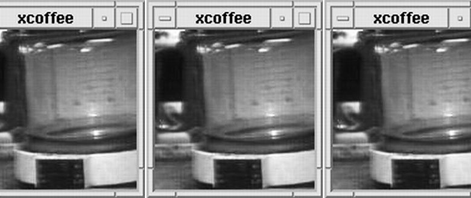

På så sätt kan forskarna alltid hålla reda på bryggaren i Trojan room utan att behöva vanka nerför alla trappor.
Först finns bilden bara tillgänglig i universitetets egna nätverk 1991, men två år senare läggs bilderna ut på internet. Martyn Johnson, som inte kan nå det interna nätverket, bygger tillsammans med Daniel Gordon ett skript som framkallar de första rörliga bilderna på nätet.
mest rafflande är att tolka om bryggaren är på väg att tömmas, eller om den brygger nytt kaffe. Miljontals tittare från hela världen kommer med åren att bevaka direktsändningen från kaffebryggaren, som till och med blir en turistattraktion.
Bryggaren blev känd för att vara känd.
Först 22 augusti 2001 stängs kameran av, eftersom laboratoriet ska flytta till en ny byggnad. Själva bryggaren (en Krups) säljs för 3350 pund på Ebay (efter 71 bud) till tidningen Der Spiegels webbredaktion. Enligt dem blir bryggaren då världens dyraste. Webbkameran lever sedan dess vidare från Tyskland.
